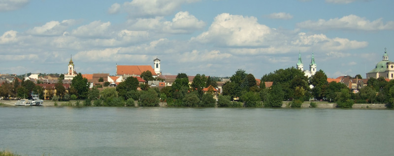

A Dunakanyar központjaként ismert település Pest megye ötödik legnagyobb lélekszámmal rendelkező városa, egyúttal vonzó idegenforgalmi célpont – egyrészt 9 és fél évszázados történelme, másrészt gazdag kulturális élete miatt. Katolikus püspöki székhely, a Váci egyházmegye központja.
A Duna nagyban befolyásolja a város hangulatát. A belvárosi részen a parton parkosított területet alakítottak ki, a külváros partját pedig – a tilalom ellenére – strandolók százai töltik meg a meleg napokon.
1846-ban megnyílt a Vácot Pesttel összekötő első magyar vasútvonal, amiért azonban a váci kereskedők korántsem lelkesedtek annyira, mint mondjuk Petőfi, hisz a gyors összeköttetés a nagyvárossal a helyi kereskedelem visszaszorulását hozta.
Az 1990-es évek legelején egy pap a Fehérek temploma alatti elfeledett pincében 18. századi múmiákra és gyönyörűen festett koporsókra lelt. A lelet világviszonylatban egyedülálló, a múmiák a pince által teremtett környezetben hihetetlen jó állapotban konzerválódtak.
